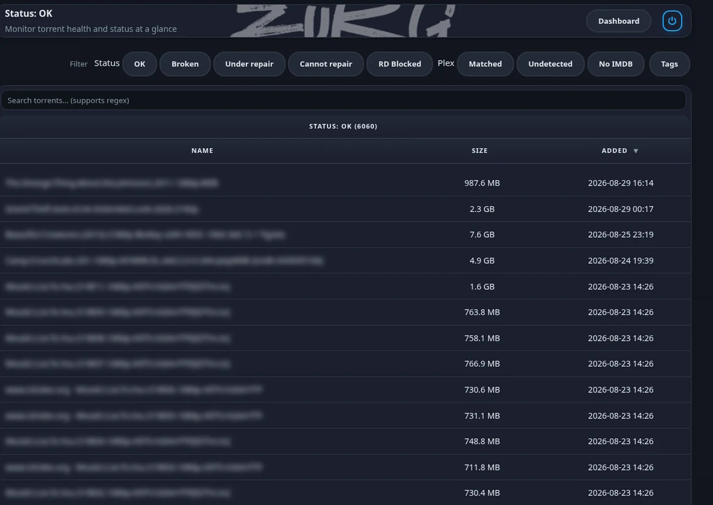
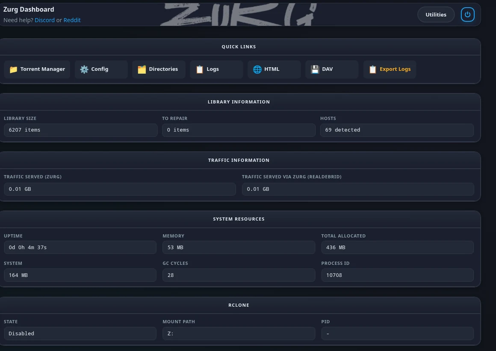
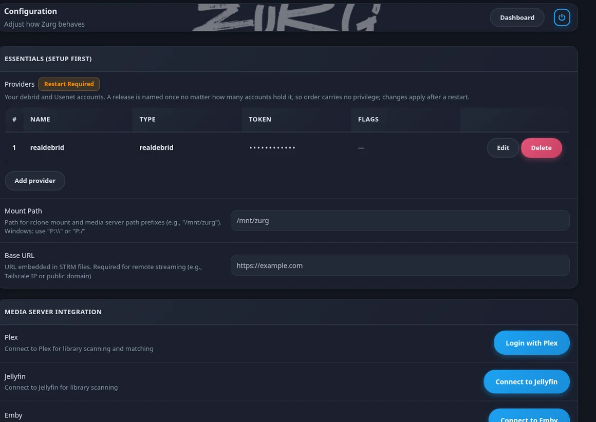

No symlinks! · No unpacking · Nightly builds for sponsors
Every debrid account and Usenet
in one folder.
One folder that Plex and Jellyfin and Emby read like a normal drive. Nothing downloads first or fills your disk.
Usenet plays like the rest of the library. zurg rebuilds missing pieces while you watch.
We put five servers on one box and only zurg repaired the damage →Install zurg on Android or Google TV →
Nightly updates bring the latest changes. $4 buys one month with no minimum term. A public build works with Real-Debrid.
Measured on 2026-08-30 on a small two core box. Your machine and connection will differ. Each figure compares with the next best result. Read the benchmark
01 / What it does
One folder.
Every account.
Two accounts. One library.
The same film on two services shows up once. If one account is busy or rate limited zurg reads from the other.
Add as many accounts as you own. There is no main account. Two more use about 5 MB of memory.
It plays the awkward stuff.
RAR and 7z releases play without unpacking. Scrambled filenames get their real names back. Missing pieces are rebuilt while you watch.
It fixes itself.
Real-Debrid links can go stale. zurg replaces dead links before playback fails. If one account loses a release it checks your other accounts for a cached copy.
Nothing is downloaded again. Services that make a fresh link each time have nothing to repair.
02 / The dashboard
Everything it knows.
On one page.
Real screenshots from a live library of 6207 releases. Release names are blurred. Nothing else is edited.



03 / Head to head
We put five servers on one box.
Then we published the harness.
Measured on 2026-08-30 on a small two core server. One news account and one server ran at a time. Each build came from its main branch that day. The benchmark names all five and includes the scripts.
Reading speed
256 MB cold reads. Six runs each on rotating offsets so nothing was ever served warm.
| zurg | 2nd | 3rd | 4th | 5th | |
|---|---|---|---|---|---|
| Average MB/s | 48.42 | 36.65 | 25.58 | 18.51 | 12.94 |
| Slowest to fastest | 43.3-52.0 | 34.0-39.4 | 24.0-27.1 | 17.7-19.0 | 8.7-16.3 |
| Wait before data arrives | 0.85 s | 1.50 s | 2.89 s | 3.61 s | 3.81 s |
| Reads that finished | 6 of 6 | 6 of 6 | 6 of 6 | 6 of 6 | 2 of 6 |
How it feels
The last two rows run through the real Plex web player and not a synthetic read.
| zurg | 2nd | 3rd | 4th | 5th | |
|---|---|---|---|---|---|
| Cold open | 0.301 s | 1.328 s | 1.722 s | 3.496 s | 5.299 s |
| Jumping to a new spot | 0.396 s | 0.493 s | 0.604 s | 2.302 s | 2.499 s |
| Press play in Plex | 3.43 s | 4.37 s | 5.49 s | 5.52 s | 5.83 s |
| Next episode in Plex | 4.19 s | 5.26 s | 5.57 s | 5.92 s | 5.94 s |
The other four are ranked inside each row so a column is not one product. Nobody came second on everything.
Living with it
Not speed. What you actually have to run and look after once it is up.
| zurg | The other four | |
|---|---|---|
| Brings up the mount itself | yes | two of them do |
| Signs in to Plex | yes | none of them |
| Backs up your Plex database | yes | none of them |
| Tidies dead items out of Plex | yes | none of them |
The two that do not bring up a mount need another program beside them. zurg also reads the library and keeps database snapshots so you can undo a bad scan.
Only one of them repaired the damage.
One of 1669 articles was gone from the news server. Four of the five never recovered it. Reading again eight minutes later changed nothing.
zurg rebuilt the missing span from the parity files while it was still serving reads.
The damaged article results →One dropped healthy content twice.
It imported nine episodes from a ten episode season. On another release its health page blamed a missing article. We checked all 1010 articles and every one was there.
zurg imported both and served both.
One could not finish a long read.
It promises the full length then closes the connection. Four of six reads never delivered the promised bytes. The first read after a restart is at risk.
zurg finished all six.
One handed back an empty folder.
Some downloads arrive with scrambled filenames. This one never imported the release so there was nothing to open.
zurg reads the real names out of the file itself and hands you the episode.
One renamed your files.
The episode arrived under the download name. Plex was left guessing what it was.
zurg keeps the original name so Plex matches it first time.
One works well and stopped.
In the 30 August 2026 comparison it handled much of what zurg handled. Its last commit was 27 May 2026 then. It left repair files in your folders.
Nothing here is broken. It is just standing still.
One will not play packed releases.
It keeps no library and gives you no folder. Its notes say packed releases will not play. It sat this round out because its build is on no public branch.
zurg plays both and keeps your library.
Coming from something else
Every guide is built around one promise. Plex does not start over. Nothing gets deleted. Your watched history and play counts and collections and artwork all survive the move.
04 / Speed
How fast it
actually is.
The top two tables come from one four provider run on 2026-08-30. The pair below is older detail on a 7.31 GB film. Premiumize and Debrid-Link and Offcloud arrived later and have not been measured. Read the baseline
Each account on its own
Reading 256 MB straight through from one account at a time. Three runs each on 2026-08-30.
| Real-Debrid | AllDebrid | TorBox | Usenet | |
|---|---|---|---|---|
| Average speed in MiB/s | 68.9 | 37.2 | 68.3 | 43.6 |
| Slowest to fastest | 63-72 | 33-41 | 67-70 | 42-47 |
| Wait before data arrives | 36 ms | 158 ms | 227 ms | not measured |
All four were measured in one run on one box. The wait row is the time for a service to return a link. Usenet builds its own link so the row has no figure. That is not zero wait. Its opening times are below.
Press play
Each one measured on a freshly started zurg on 2026-08-19.
| Real-Debrid | AllDebrid | TorBox | |
|---|---|---|---|
| Opening a file | 1.294 s | 0.476 s | 0.565 s |
| Before playback starts | 0.158 s | 0.203 s | 0.208 s |
| Jumping to a new spot | 0.343 s | 0.259 s | 0.356 s |
| Reading video details | 1.98 s | 1.34 s | 0.99 s |
| Memory used | 75 MB | 30 MB | 50 MB |
On Usenet
Extra Usenet results from the five way benchmark on 2026-08-30.
| Usenet | |
|---|---|
| Opening a file | 0.301 s |
| Before playback starts | 0.350 s |
| Jumping to a new spot | 0.396 s |
| Reading video details | 1.33 s |
| Memory used | 437 MB |
This was a different run on a different day. Usenet uses more memory because it rebuilds damage and reads inside archives.
05 / Honest limits
The things it will not do.
Read these limits before you set it up. Every line comes from the same measurements as the rest of the page.
A broken release stays broken.
zurg rebuilds what the parity files can cover. Past that you get an empty folder rather than an error. There is nothing left to serve.
It finds out by trying.
zurg checks a release when you open it. A bad one is not skipped in advance.
The first build takes a while.
The first build is slow by design. Real-Debrid takes about half a second per torrent. After that zurg keeps up on its own.
Where that number comes from →One box and one provider.
Everything was measured on one two core server with one news account. A different machine or backbone will change the numbers. Runs from different days do not compare.
These are our own numbers.
zurg is built by the person who ran the benchmark. Treat these as reference numbers. Your machine and connection will differ. zurg ships the same measurement as a command.
Maybe not for you.
Setup creates your drive and starts zurg with your machine. Infuse can read it directly. Other players need a media server.
06 / Access
Two builds.
Both of them real.
Nightly builds bring the latest changes. $4 buys one month of updates with no minimum term. The free build covers Real-Debrid and stays free.
What the $4 is for
Keep DMM free. Get zurg nightlies.
Your $4 covers hosting and development.
buys one month of updates. No minimum term. A card or monthly GitHub Sponsors or Patreon tier renews until you stop it. A one-off never renews. Switch a card plan to yearly and ten months buys twelve.
You also get ten other streams per title instead of five. Priority NZB uploads get 2 TB a day instead of 300 GB through DMM and SABnzbd. The torrent uploader runs three jobs instead of one. rex-stremio gets known DMM titles faster. Your tools get the DMM API.
Every 10 request-board fills earns 7 days of DMM perks. One fill per person per day counts. Earned time covers DMM only. Paid sponsorship adds zurg nightlies and source plus remote help and the Sponsor role on Discord. See the full guide.
Builds you pull keep working after your month ends. A subscription renews until you cancel it at the top of gatekeeper or on GitHub or Patreon.
Start at gatekeeper. Link the GitHub account that receives the invite and pay there. Stripe also offers Apple Pay and Google Pay and Link. GitHub Sponsors and Patreon work too.
A PayPal payment is one off and added by hand. Copy your Sponsorship ID from gatekeeper and send it to @yowmamasita on Discord.
One Real-Debrid account on the older settings format. The nightly adds the other backends and multiple accounts.
07 / Quick start
Up and running.
Put the binary in one folder and run setup. zurg asks which providers you use. It fetches the helpers and creates the mount and auto-start.